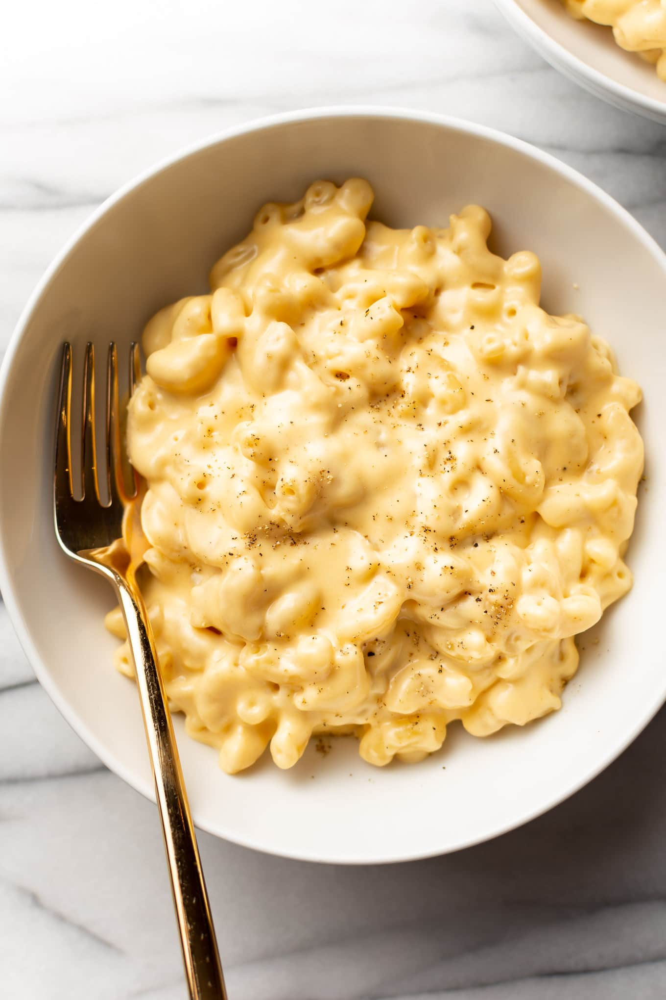

Credits: Salt and Lavender
The Best Easy Mac N' Cheese!
This easy homemade mac and cheese recipe is super creamy, rich, and delicious. It's quick and simple to make in about 30 minutes!
1 pound uncooked macaroni
1/4 cup butter (1/2 stick)
1/4cup flour
2 (12 ounce) cans evaporated milk
1/2 teaspoon garlic powder
1/2 teaspoon mustard powder
1/2 teaspoon salt
2 cups freshly grated cheddar
1/2 cup freshly grated parmesan cheese
Pepper to taste
Cook the macaroni al dente according to package instructions.
Meanwhile, in another pot, melt the butter over medium heat. Stir in the flour and cook it, stirring often, until golden (about 3-5 minutes).
Slowly whisk in the evaporated milk, then whisk in the seasonings. Cook for a few minutes until the sauce starts to thicken up (this happens quite fast, so be careful not to let it get too thick).
Take the pot off the heat and stir in the cheeses.
Stir in the drained macaroni and toss to coat in the cheese sauce. Add pepper to taste (and more salt if needed). It's best enjoyed immediately.